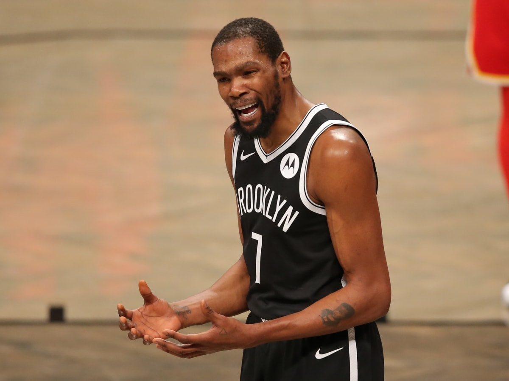

Imagenes Semanales
Los flamantes Golden State Warriors venciendo a los Boston Celtis para coronarse nuevamente campeones nuevamente de la NBA.


Noticias Actualidad

¿Dónde jugará Facundo Campazzo? Posibles equipos del astro argentino.
articulo completo aqui

Kevin Durat es pretendido por un equipo inesperado
articulo completo aqui
Portland, campeón de la NBA Summer League 2022 y su MVP de las Finales
articulo completo aqui
La NBA retirará el dorsal 6 en honor a Bill Russell
articulo completo aqui
El equipo al que quiere volver Carmelo Anthony.
articulo completo aqui